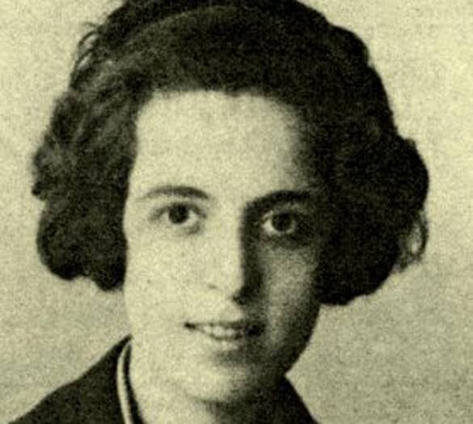

Το 1920 ο Κώστας Καρυωτάκης γνωρίζεται με την επίσης χαρισματική αλλά και «καταραμένη» ποιήτρια Μαρία Πολυδούρη (1/4/1902 - 29/4/1930). Η ίδια σε επιστολή της σε φίλη της αναφέρει για τον Καρυωτάκη: «Στο κάτω-κάτω εγώ αγάπησα έναν ποιητή. Δεν αγάπησα έναν ήρωα. Αν ήθελα ήρωα, θα αγαπούσα τον Ανδρούτσο».
Πληροφορίες λένε πως η Πολυδούρη τού είχε προτείνει γάμο, αλλά αυτός αρνήθηκε με τη αιτιολογία ότι «πάσχει από ανίατο αφροδίσιο νόσημα και δεν θέλει να πάρει στο λαιμό του καμιά γυναίκα». Τη νόσο την περιγράφει ο Καρυωτάκης χαρακτηριστικά στο ποίημά του Ωχρά Σπειροχαίτη, που είναι το όνομα του μικροβίου που προκαλεί τη σύφιλη.